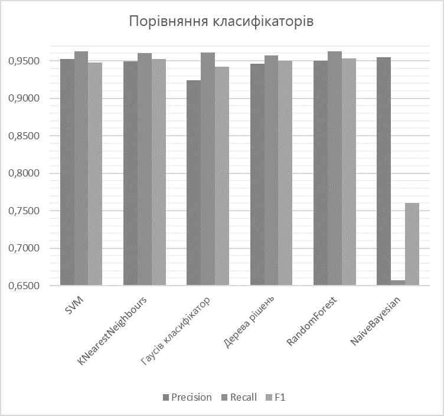

Вступ
У сучасному світі в інтернеті щодня з'являється величезна кількість новинних заголовків про зовнішньоторговельну діяльність держав, проте часто ці статті, замітки і огляди представляються користувачеві загальним списком, який, зазвичай, відсортований за часом завантаження і не дозволяє оцінити корисність інформації, чи дійсно вона відповідає категорії, яку шукають. У зв'язку з цим, виникає необхідність автоматичної класифікації зовнішньоторговельної інформації.
1. Актуальність теми
Автоматизована класифікація текстової інформації відноситься до класу важко формалізованих завдань і в даний час є особливо актуальною в зв'язку з необхідністю автоматизації процесу збору та аналізу інформації, отриманої з мережі Інтернет, на основі інтелектуальних програмних систем.
Проблемою універсальної автоматичної класифікації текстів є те, що вона не дає такого рівня повноти і точності класифікації, як спеціалізовані класифікатори, налаштовані на певний клас документів. У зв'язку з цим часто виникає необхідність в дослідженні і реалізації спеціалізованих алгоритмів.
Через те, що кількість зовнішньоторговельної інформації в інтернеті стає дедалі більше, дослідження і розробка алгоритму автоматичної класифікації текстів по зовнішньоторговельній інформації держав є актуальною проблемою.
2. Мета і завдання дослідження, результати, що плануються
Метою дослідження є розробка алгоритму автоматизованої класифікації інформації про зовнішньоторговельної діяльності держав і його впровадження в інформаційно-пошукову систему.
Основні завдання:
- Аналіз існуючих методів класифікації природно-мовної текстової інформації.
- Аналіз методів збору інформації в Інтернет.
- Аналіз етапів створення ІПС.
- Розробка архітектури програмної моделі.
- Розробка програмної моделі інформаційно-пошукової системи.
- Розробка алгоритму автоматизованої класифікації інформації про зовнішньоторговельну діяльність держав.
- Оцінка модуля автоматизованої класифікації інформації для ІПС про зовнішньоторговельну діяльність держав.
Новизна полягає в розробці програмної моделі класифікації інформації про зовнішньоторговельну діяльність держав, отриманої на основі аналізу сторінок мережі Інтернет.
Планується, що розроблені алгоритми і програми складуть основу інформаційно-пошукової системи, яка працює з інформацією про зовнішньоторговельну діяльность держав.
3. Огляд досліджень і розробок
У відкритому доступі знаходиться велика кількість досліджень по темі автоматичної класифікації. Однак досліджень за класифікацією інформації зовнішньоторговельної діяльності держав виявити не вдалося.
3.1. Огляд міжнародних джерел
У дослідженні Багаторівнева класифікація економічних статей на основі онтологій
[1], Сергій Вогринчич и Зоран Босник представляють підхід до задачі автоматичної категоризації документів в області економіки. Вони оцінили точність тестових моделей і прийшли до висновку, що всі вони мають потенціал для використання, а також на підставі результатів виявили переваги використання складних груп підходів.
В роботі Дослідження категоризації тексту на WEKA
[2]
були проаналізовані три поплуярних алгоритму категоризації тексту, а саме наївний байесовский класифікатор, дерево рішень і метод опорних векторів. Зроблено висновок про те, що на економічних текстах найкраще себе проявив наївний байесовский класифікатор.
У статті Ефективність гомогенного ансамблю класифікаторів для турецького та англійського текстів
[3]
подається порівняльний аналіз використання гомогенних ансамблів для класифікації турецьких і англійських текстів. У висновках зображено перевагу гомогенного ансамблю Random Forest.
3.2. Огляд національних джерел
У статті Аналіз методів класифікації інформації в інтернеті при вирішенні задач інформаційного пошуку
[4]
автор розглядає кілька підходів до класифікації інформації і пропонує для підвищення ефективності використовувати комбінований підхід.
У статті Автоматична класифікація текстових документів з використанням нейромережевих алгоритмів і семантичного аналізу
[5]
розглянуті нейромережеві алгоритми, що застосовуються в задачах класифікації текстів, а також викладено методи та моделі семантичного аналізу текстів стосовно задачі поліпшення якості знаходження рубрики.
В роботы Порівняльний аналіз алгоритмів класифікації та способів представлення Web-документів
[6]
було розглянуто ряд алгоритмів класифікації і питання попередньої обробки текстів. На основі аналізу результатів експериментів був запропонований ряд удосконалень класифікаторів.
3.3. Огляд локальних джерел
В рефераті Лінкіна Віктора Олеговича Дослідження алгоритмічного забезпечення інтелектуальної системи класифікації політематичних гіпертекстових документів
[7]
проведено аналіз особливостей класифікації документів у разі, коли класи можуть перетинатися і документ може бути віднесений до декількох класів.
В рефераті Трегубової Юлії Олександрівни Дослідження методу тематично орієнтованої класифікації результатів пошуку в Інтернет
[8]
проведено аналіз існуючих підходів для підвищення релевантності тематичного пошуку шляхом класифікації результатів видачі пошукових систем.
4. Огляд і аналіз алгоритмів бінарної класифікації інформації про зовнішньоторговельну діяльність держав
Для того, щоб вибрати найбільш ефективний алгоритм для класифікації зовнішньоторговельних текстів необхідно провести їх аналіз на певний вибірці. Завдання є актуальним для інформаційно-пошукових систем, спрямованих на пошук і обробку інформації з міжнародної торгівлі. У розділі наведено огляд алгоритмів класифікації інформації та їх порівняння при роботі з даними по зовнішньоторговельну економічної діяльність держав.
4.1. Відбір термінів для класифікації
Будь-яка класифікація проводиться на основі якихось ознак. Для того щоб класифікувати текст насамперед необхідно визначити значення обраних ознак для цього тексту. На сьогоднішній день однією з найбільш ефективних для автоматичного визначення необхідних ознак є TF-IDF міра
[9].
TF-IDF - Статистична міра, яка використовується для оцінки значущості слова в документі, який є частиною набору документів. Вага слова пропорційний частоті його вживання в документі і обернено пропорційний частоті його вживання у всьому наборі (документах). Кількість ознак було обрано 10 довільно, однак при його виборі враховувалося зміна f1 метрики на більш високих показниках даного параметра.
4.2. Відбір матеріалу для класифікації
Для тестування алгоритмів класифікації вирішено використовувати набір класифікованих статей від reuters в кількості 10788 штук, з яких 7769 припадають на навчальну вибірку і 3019 - на тестову. Статті класифіковані на 90 категорій. У дослідженні реалізований бінарний класифікатор статей по зовнішньоторговельним ознаками, тому інші 89 категорій були помічені, як «other». Класифікаторами в дослідженні обрано такі алгоритми: SVM (support vector machine), KNearestNeighbours, Гаусів класифікатор, Дерева рішень, класифікатор RandomForest і Наївний Байєсівський класифікатор.
4.3. Розрахунок метрик для алгоритмів
Для можливості порівняння алгоритмів розраховані метрики точності повноти і F1 - міри для кожного з алгоритмів з різними варіантами їх параметрів.
4.3.1. SVM
набір алгоритмів класифікації, які переводять отримані вихідні вектори в простір більшої розмірності і знаходять гіперплощину, яка розділяє представлені класи
[10].
У дослідженні проводилося тестування даного класифікатора на різних показниках ядра, гами і параметр штрафу. При цьому були розраховані метрики точності, повноти і f1 метрика. Результати наведені в таблиці 1.
Таблиця 1 - Метрики для класифікатора SVC
| Пар-ри |
Precision |
Recall |
F1 |
|
kernel = "linear",
C = 0.025
|
0.924 |
0.9612 |
0.9423 |
| gamma = 2, C = 1 |
0.9578 |
0.9626 |
0.946 |
| gamma = 3, C = 1 |
0.9522 |
0.9626 |
0.9477 |
Згідно з отриманими даними третє значення є оптимальним згідно F1 - міри. В подальшому порівнянні будуть використані дані за цими параметрами.
4.3.2. KNearestNeighbours
В основі алгоритму найближчих сусідів (kNN) лежить правило, що тестовий об'єкт зі своїм набором ознак належить класу, якому належать більшість з k його найближчих сусідів
[11].
У дослідженні проводилося тестування даного класифікатора на різних показниках k, а саме на 3-х, 5-ти і 10-ти сусідів. При цьому були розраховані метрики точності, повноти і f1 метрика. Результати наведені в таблиці 2.
Таблиця 2 - Метрики для класифікатора kNN
| k |
Precision |
Recall |
F1 |
| 3 |
0.946 |
0.9559 |
0.95 |
| 5 |
0.9494 |
0.9603 |
0.9527 |
| 10 |
0.9528 |
0.9566 |
0.9498 |
Згідно з отриманими даними значення кількості сусідів 5 є оптимальним згідно F1 - міри. В подальшому порівнянні будуть використані дані за цим параметром.
4.3.3. Гаусів класифікатор
Основна ідея гаусівського класифікатора полягає в припущенні того, що функція правдоподібності (тренувальний набір) відома для кожного класу і дорівнює щільності гаусівського нормального розподілу
[12].
У дослідженні проводилося тестування даного класифікатора на різних показниках аргументу радіально-базисної функції. При цьому були розраховані метрики точності, повноти і f1 метрика. Результати наведені в таблиці 3.
Таблиця 3 - Метрики для класифікатора Гауса
| RBF(x) |
Precision |
Recall |
F1 |
| 1.0 |
0.924 |
0.9612 |
0.9423 |
| 0.5 |
0.924 |
0.9612 |
0.9423 |
| 1.5 |
0.924 |
0.9612 |
0.9423 |
Згідно з отриманими даними значення RBF слабо впливає на показники згідно F1 - міри.
4.3.4. Дерева рішень
Дерево рішень - класифікатор, який на тренувальних даних вибудовує структуру, вузлами якого є атрибути відмінностей, в листі записані атрибути цільової функції, а на ребрах - необхідна множина атрибутів. Завдання дерева рішень - створити модель, яка передбачає значення цільової функції на основі декількох входів
[13].
У дослідженні проводилося тестування даного класифікатора на різних показниках аргументу максимальної глибини дерева. При цьому були розраховані метрики точності, повноти і f1 метрика. Результати наведені в таблиці 4.
Таблиця 4 - Метрики для дерева рішень
| max |
Precision |
Recall |
F1 |
| 5 |
0.9458 |
0.9573 |
0.9501 |
| 10 |
0.9421 |
0.9523 |
0.9465 |
| 15 |
0.943 |
0.95 |
0.9462 |
Згідно з отриманими даними глибина дерева 5 є оптимальним за F1 - мірою. В подальшому порівнянні будуть використані дані за цим параметром.
4.3.5. Класифікатор RandomForest
RandomForest - це алгоритм машинного навчання, який полягає у використанні гомогенного ансамблю дерев рішень. Основна ідея полягає в використанні великого ансамблю дерев рішень, який за рахунок їх великої кількості покращує результат класифікації
[14].
У дослідженні проводилося тестування даного класифікатора на різних показниках аргументу максимальної глибини дерева. При цьому були розраховані метрики точності, повноти і f1 метрика. Результати наведені в таблиці 5.
Таблиця 5 - Метрики для RandomForest
| max |
Precision |
Recall |
F1 |
| 5 |
0.924 |
0.9502 |
0.9487 |
| 10 |
0.9606 |
0.9626 |
0.9612 |
| 15 |
0.9419 |
0.953 |
0.9527 |
Згідно з отриманими даними глибина дерева 10 є оптимальним за F1 - мірою. В подальшому порівнянні будуть використані дані за цим параметром.
4.3.6. Наївний Байєсівський класифікатор
В основі наявного Байєсова класифікатора лежить теорема Байеса. Даний класифікатор став одним із стандартних універсальних методів класифікації. Перевагою даного класифікатора є відносно невелика кількість даних, необхідних для навчання
[15].
У дослідженні проведено тестування даного класифікатора. При цьому були розраховані метрики точності, повноти і f1 метрика. Результати наведені в таблиці 6.
Таблиця 6 - Метрики для NaiveBayesian
| Precision |
Recall |
F1 |
| 0.9551 |
0.6568 |
0.7602 |
4.4. Порівняння класифікаторів
Після проведення тестування виконано порівняльний аналіз класифікаторів за точністю, повноті і f1 міру
[16].
У зв'язку з тим, що була використана досить велика колекція тренувальних документів, а також завдяки використанню алгоритму відбору ознак TF-IDF, отримані результати відрізняються досить несуттєво і всі мають хороші показники розпізнавання текстів з зовнішньоторговельної міжнародної інформації. Виняток становить лише наївний Байєсівський алгоритм, який показав рівень F1 в 0.7602, що не є задовільним результатом для бінарної класифікації. Результати порівняння представлені на малюнку 1. За виваженою оцінкою, найкращим чином себе показав гомогенний ансамбль RandomForest на глибині дерева 10.

Малюнок 1 - Порівняння класифікаторів
(Анімація: 10 кадрів, 10 циклів повторення, 53 кілобайт)
Висновки
Проведено аналіз алгоритмів класифікації, таких як SVM (support vector machine), KNearestNeighbours, Гаусів класифікатор, Дерева рішень, класифікатор RandomForest і Наївний Байєсівський класифікатор. Реалізовано алгоритм відбору та відібрані ознаки класифікації по TF-IDF. Проведено тестування алгоритмів з різними параметрами по тренувальним і тестовим даними, визначені оптимальні параметри для кожного алгоритму на підставі оцінки F1 міри. Проведено порівняння алгоритмів порівнянням оптимального значення F1 міри, повноти і точності для кожного з них. Гомогенний ансамбль RandomForest виявлений, як оптимальний класифікатор для бінарної класифікації зовнішньоторговельної інформації. Встановлено незадовільні результати класифікації наївним Байєсовським класифікатором.
Список джерел
-
1. Sergeja Vogrinčič1, Zoran Bosnić, Ontology-based multi-label classification of economic articles. Computer Science and Information Systems, 2011 [джерело в бібліотеці]
-
2. Li Dan, and Liu Lihua, Zhang Zhaoxin, Research of Text Categorization on WEKA. Third International Conference on Intelligent System Design and Engineering Applications, 2013 [джерело в бібліотеці]
-
3. Zeynep Hilal Kilimci, Selim Akyokus, Sevinc Ilhan Omurca, The Effectiveness of Homogenous Ensemble Classifiers for Turkish and English Texts. International Symposium on Innovations in Intelligent Systems and Applications (INISTA), 2016 [джерело в бібліотеці]
-
4. Мэн Цинань, Анализ методов классификации информации в интернете при решении задач информационного поиска. Научный журнал
Моделирование, оптимизация и информационные технологии
№2(13), 2016
-
5. Андреев А.М., Березкин Д.В., Морозов В.В., Симаков К.В., Автоматическая классификация текстовых документов с использованием нейросетевых алгоритмов и семантического анализа. Всероссийская Научная Конференция, 2003 [джерело в бібліотеці]
-
6. Максаков Алексей, Сравнительный анализ алгоритмов классификации и способов представления Web-документов. Третий российский семинар по оценке методов информационного поиска, 2005 [джерело в бібліотеці]
-
7. Линкин В.О., Исследование алгоритмического обеспечения интеллектуальной системы классификации политематических гипертекстовых документов, 2013 [Электронный ресурс]. – Режим доступа:http://masters.donntu.org/2013/fknt/linkin/diss/index.htm
-
8. Трегубова Е.А., Исследование метода тематически ориентированной классификации результатов поиска в Интернет, 2014 [Электронный ресурс]. – Режим доступа:http://masters.donntu.org/2014/fknt/tregubova/diss/index.htm
-
9. Salton, G. and Buckley, C. Term-weighting approaches in automatic text retrieval. Information Processing & Management, 1988
-
10. Nello Cristianini, John Shawe-Taylor An Introduction to Support Vector Machines and Other Kernel-based Learning Methods. — Cambridge University Press, 2000
-
11. Brett Lantz, Machine Learning with R. Pack Publishing. Birmongham-Mumbai, 2013
-
12. Breiman, Leo; Friedman, J.H., Olshen, R.A., & Stone, C.J. Classification and regression trees. Monterey, CA: Wadsworth & Brooks/Cole Advanced Books & Software, 1984
-
13. Hastie, T., Tibshirani R., Friedman J. Chapter 15. Random Forests // The Elements of Statistical Learning: Data Mining, Inference, and Prediction. — 2nd ed. — Springer-Verlag, 2009. — 746 с.
-
14. Hand, DJ, & Yu, K. «Idiot’s Bayes — not so stupid after all?» International Statistical Review, 2001. - с 385—399.
-
15. 7. Е.И. Большакова Автоматическая обработка текстов на естественном языке и компьютерная лингвистика: учеб. пособие / Большакова Е.И., Клышинский Э.С., Ландэ Д.В., Носков А.А., Пескова О.В., Ягунова Е.В. — М.: МИЭМ, 2011. — 272 с.
-
16. Титаренко М.Г., Коломойцева И.А. Обзор и анализ алгоритмов для осуществления бинарной классификации информации о внешнеторговой деятельности государств // Материалы международной научно-практическаой конференции «Программная инженерия: методы и технологии разработки информационновычислительных систем» (ПИИВС-2018) – Донецк: ДонНТУ, 2018 [джерело в бібліотеці (російська)][джерело в бібліотеці (англійська)]